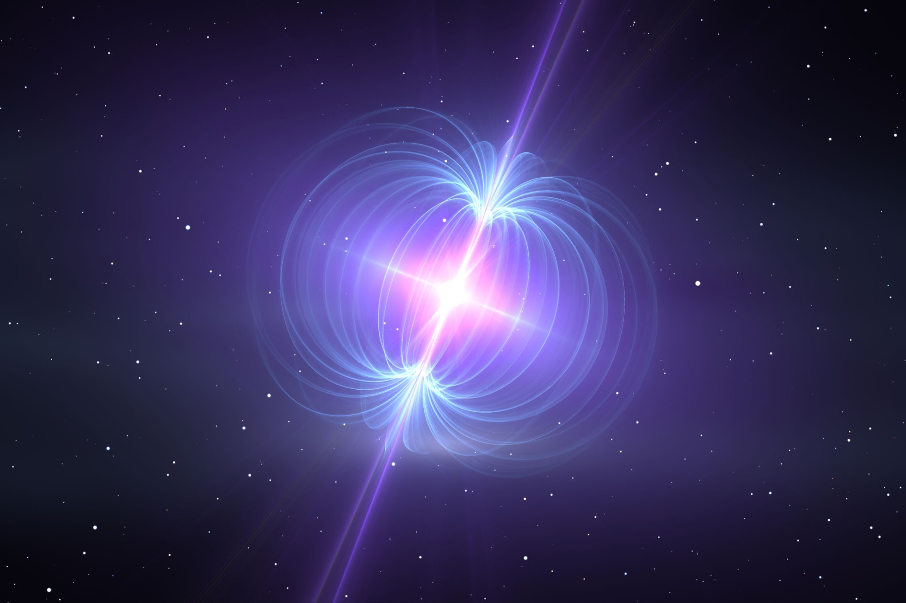
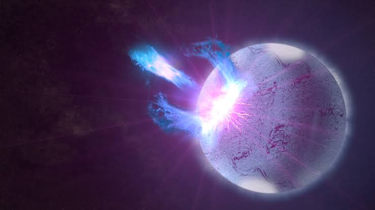
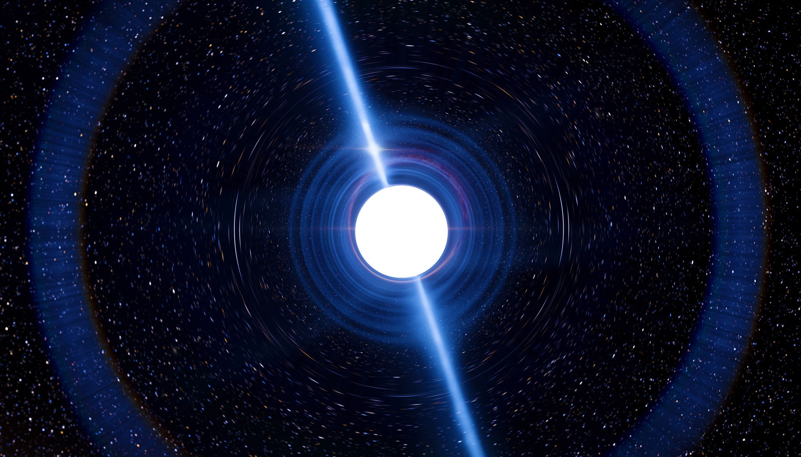
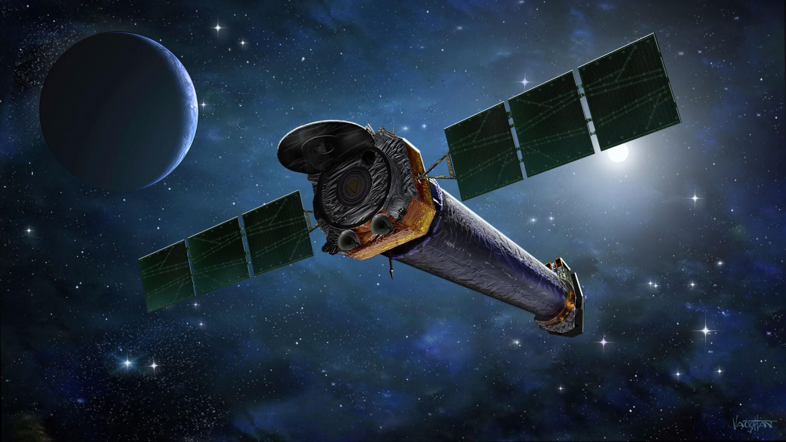

Para comprender la naturaleza extrema y destructiva de los magnetares y la radiación cósmica de alta intensidad, es fundamental definir primero qué es un magnetar según la astrofísica moderna. Un magnetar es un tipo altamente especializado y exótico de estrella de neutrones, el remanente ultradenso resultante del colapso gravitacional de una estrella supermasiva, que se distingue por poseer el campo magnético más potente conocido en todo el universo observable. Mientras que una estrella de neutrones típica ya exhibe un campo magnético millones de veces superior al de cualquier imán fabricado por el ser humano, un magnetar amplifica esta condición hasta alcanzar intensidades del orden de diez a la catorce gauss o más, una fuerza magnética tan desmesurada que es capaz de distorsionar la estructura fundamental de los átomos, deformar las nubes de electrones en formas alargadas y desintegrar la materia ordinaria a niveles subatómicos. Esta condición extrema se origina durante los primeros instantes de la formación de la estrella de neutrones, donde una combinación de rotación ultrarrápida y convección interna amplifica el campo magnético original mediante un efecto dínamo hiperactivo antes de congelar su configuración en la corteza hiperdensa del astro.

A partir de esta definición, el peligro latente que representan los magnetares radica en la inestabilidad dinámica de su corteza y en las colosales erupciones magnéticas que experimentan de manera periódica, conocidas científicamente como terremotos estelares o starquakes. A diferencia de las estrellas de neutrones ordinarias, la presión del campo magnético interno de un magnetar ejerce tensiones mecánicas descomunales sobre la sólida corteza de neutrones degenerados, la cual es miles de millones de veces más resistente que el acero. Cuando la tensión acumulada supera el límite de resistencia de la materia, la corteza se fractura repentinamente, desencadenando una reconexión magnética masiva que libera en pocos segundos una cantidad de energía en forma de rayos gamma y rayos X duros equivalente a la producción total del Sol a lo largo de decenas de miles de años. Estos estallidos de alta energía viajan a través del medio interestelar sin perder su intensidad destructiva, convirtiendo a los magnetares en faros de radiación letal capaces de alterar drásticamente la química atmosférica de cualquier sistema planetario que se encuentre dentro de su radio de influencia galáctica.

Entre los eventos históricos y documentados más aterradores asociados a estos objetos destaca el inmenso estallido registrado el veintisiete de diciembre de dos mil cuatro, originado por el magnetar SGR 1806-20, situado a una distancia estimada en unos cincuenta mil años luz de la Tierra, en la constelación de Sagitario. A pesar de encontrarse en las regiones lejanas del disco galáctico, la llamarada gigante emitida por SGR 1806-20 fue tan violenta que ionizó de manera abrupta y significativa la alta atmósfera terrestre, alterando la capa ionosférica y afectando el funcionamiento de varios satélites científicos en órbita baja que no estaban diseñados para soportar un flujo tan masivo de rayos gamma. Los cálculos astrofísicos posteriores demostraron que si un evento de esta magnitud hubiera ocurrido a una distancia de tan solo diez años luz de la Tierra, el torrente de radiación resultante habría destruido por completo la capa de ozono atmosférico, desatando una crisis biológica global y colapsando de manera irreversible todas las redes eléctricas, sistemas de telecomunicaciones y tecnologías de comunicación de la civilización humana.

Otro ejemplo fundamental en el estudio de estos monstruos magnéticos es SGR 1900+14, ubicado a unos veinte mil años luz de distancia en la constelación del Águila, el cual ha protagonizado múltiples erupciones violentas que han sido monitoreadas minuciosamente por observatorios espaciales de rayos X y rayos gamma. La observación continuada de SGR 1900+14 ha permitido a la comunidad científica comprender cómo la actividad magnética de estos objetos decae a lo largo de los milenios, transitando desde fases hiperactivas de juventud estelar hasta etapas de menor actividad conocidas como pulsares de rayos X anómalos. Sin embargo, incluso en sus fases de menor emisión, los magnetares continúan irradiando partículas cargadas y fotones de alta energía que ionizan el espacio circundante, demostrando que estos cadáveres estelares representan uno de los entornos más hostiles, dinámicos y potencialmente letales de todo el cosmos.
